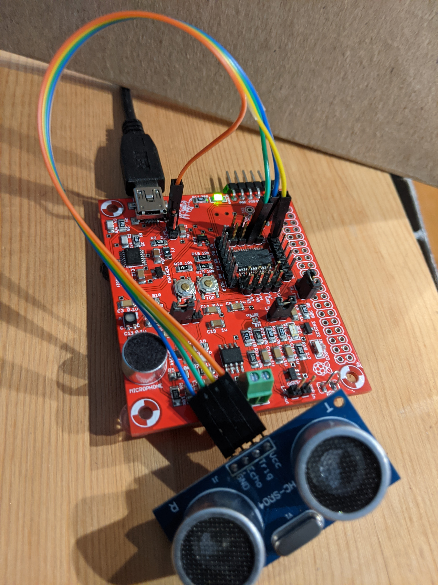

EENG 383
Lab 13 - Ultrasonic Parking AssistantRequirements
Working in teams of two, read through the following lab activity and perform all the actions prescribed. You do not need to document bullet items. Make a record of your response to numbered items and turn them in a single copy as your teams "inLab" assignment in class on Friday. Word process your solutions. Include the names of both team members at the top of your solutions. Use complete English sentences when answering questions. If the answer to a question is a table or other piece of art (like an oscilloscope trace or a figure), then include a sentence explaining the piece of art. Only include your answers to the questions, do not include the questions or other inLab text unless it is absolutely needed.Objective
The objective of this lab is to teach you how to use interrupt subsystem to control and measure signals from a HC-SR04 Ultrasonic range finder. Also we will examine how to resolve update conflicts that arise when you need to change the MCC configuration.External Hardware
To answer the following questions you will need to consult the HCSR04 - Ultra-Sonic Ranging Module HC-SR04 Technical Specification. The speed of sound has some relationship to the elevation at which it is measured. Within a reasonable degree of accuracy, the speed of sound in Golden Colorado is 334 m/s. Use this value in your calculations.- Given a range of x centimeters from the ultrasonic sensor to an object, determine the duration of the echo pulse generated by the ultrasonic sensor in milliseconds. Remember that the acoustic pulse emitted by the ultrasonic sensor must travel out to the object and then reflect back to the sensor. The echo pulse is held high during the flight time (out and back) of this acoustic pulse. Use dimensional analysis and show your work for full credit.
- I've found that the ultrasonic sensor can work out to 500cm; the technical docs for the ultrasonic range finder list 400cm as the maximum range. I've also experienced problems with ranges below 10cm; the technical documents list a minimum range of 2cm - best of luck with that. Determine the duration of the echo pulse (in milliseconds) for an object placed at 10cm and 500cm from the ultrasonic sensor. Use dimensional analysis and show your work for full credit.
- Assuming that we are measuring the duration of the echo pulse using a 16-bit timer, what is the smallest prescaler that can be used to measure the duration of the echo pulse.
- Given an echo pulse of x milliseconds generated by the ultrasonic sensor, determine the range (in centimeters) from the object to the ultrasonic sensor. Use dimensional analysis and show your work for full credit.
- Open the HC-SR04 - Ultra-Sonic Ranger technical documents linked earlier in this lab. What is the minimum duration of the pulse on the trigger input?
Internal Subsystem
Discuss capture subsystem, rising and falling edge. Interrupt subsystem.- Given an echo pulse of duration x timer counts with the timer configured with a 1:8 prescaler, find the distance in centimeters to the object. Use dimensional analysis for full credit. Note, the constant relating timer counts to centimeters will be called the conversion factor. Let's say that you measured the duration of the echo pulse using a 1:8 prescaled timer and stored the number of timer counts in a variable called timerCounts. I want you to convert the timer counts into a distance (in centimeters) by multiplying by the conversion factor determined in the previous problem. We will use 0.008 as the approximation in the following discussion, but you should use the true value determined in the previous problem. To summarize I would write the equivalent of the following line of code in your program:
- Write a C-code snippet to convert timerCounts into distance in centimeters.
distanceInCm = 0.008 * timerCounts;
However since we are not allowed to use floating point math on the PIC, we will need to find an alternative.
The idea will be to multiply the conversion factor by 216, multiply the result with timerCounts and then divide by 216. In other words:
distanceInCm = ((216*0.008) * timerCounts)/216;
Since we are multiplying and then dividing by the same factor (216), the factors cancel leaving us with the same answer as if we had just multiplied by 0.008. However, the advantage is that the product 216*0.008 = 524 (rounded to nearest integer) which is easy to multiply by timerCounts using regular integer math. Then the division by 216 can be accomplished by shifting right by 16-bits using the C shift operation.
Firmware Organization
Build a project using the following MCC configuration:- In the INTERNAL OSCILLATOR area of the System Module window
- Oscillator Select: Internal oscillator block
- System Clock Select: FOSC
- Internal Clock: 16MHz_HFINTOSC
- Software PLL Enabled: Check
- In the Pin Manager: Grid [MCC] tab of the console window click on the open lock in the Port C 4 column and in the output row.
- In the Project Resources area of the project window, click "Pin Module". The editor window will change from the System Module to Pin Module. Click on the Custom Name text box in the RC4 row and change the name to "TRIGGER_PIN".
- If selected, unselect Analog.
- In the Device Resources area of the project window, expand the EUSART option. Double click EUSART1.
- In the Device Resources area of the project window, expand the CCP option. Double click CCP4
- In the Device Resources area of the project window, expand the Timer option. Double click TMR1.
- In the Device Resources area of the project window, expand the Timer option. Double click TMR0.
- In the Project Resources area of the project window click on EUSART1.
- Enable EUSART: ✓
- Enable Transmit: ✓
- Enable Wake-up: □
- Auto-Baud Detection: □
- Enable Address Detect: □
- Baud Rate: 9600
- Transmission Bits: 8-bit
- Reception Bits: 8-bit
- Clock Polarity: async_noninverted_sync_fallingedge
- Enable Receive: ✓
- Enable EUSART Interuupts: □
- Redirect STDIO to USART ✓
- In the Project Resources area of the project window click on CCP4.
- ECCP mode: Capture
- Capture Timer Select: Timer1
- Capture mode: Every rising edge
- Enable CCP interrupt: □
- In the Project Resources area of the project window click on TMR1.
- Enable Timer: ✓
- Clock Source: FOSC/4
- Prescaler: 1:8
- Enable Synchronization: ✓
- Timer Period: 32ms
- In the Project Resources area of the project window, expand the
Peripherals option if not already expanded, and click on TMR0.
- Enable Timer: ✓
- Enable Prescaler: ✓
- Prescaler: 1:32
- Timer mode: 16-bit
- Clock Source: FOSC/4
- Enable Timer Interrupt: ✓
- Requested Period: 131ms

Let's examine the structure of the firmware before moving on with this lab. In the Project area of the project window, expand the Source File folder then expand the MCC Generated Files folder.
- At the start of main the function SYSTEM_Initialize is called. Open the MCC generated file mcc.c, and find this function. What function in this function initializes the interrupt subsystem?
- Open the MCC generated file interrupt_manager.c, what function is called when Timer 0 is enabled (INTCONbits.TMR0IE equals 1) and Timer 0 has rolled over (INTCONbits.TMR0IF equals 1)?
- Open the MCC generated file tmr0.c and find this function. This function performs three main actions, list them out.
- At the top of your main.c program, you call TMR0_SetInterruptHandler(myTMR0ISR);. What is the relationship between this function call and the third action taken inside the TMR0_ISR function?
Firmware Experiments
You may want to print out the centimeter measuring tape at this link. Lay a 30 centimeter-long piece of tape down on the lab bench. Mark off 2 cm intervals along the length of the tape. Place the ultrasonic range finder transducer along the 0 cm mark. You will be placing a solid hard surface along the length of the tape so that the ultrasonic acoustic pulses better reflect. For the following experiment, place a solid surface about 20cm away from the front of the ultrasonic range finder. To measure the ultrasonic range finder signals with the oscilloscope, grab the ultrasonic range finder near the bend in its connector. Now configure your oscilloscope as follows.| Ch1 probe | Ultrasonic range finder right-angle header pin labeled "Trig" |
| Ch1 ground clip | Dev board ground loop |
| Ch2 probe | Ultrasonic range finder right-angle header pin labeled "Echo" |
| Ch2 ground clip | Clip to its own cable, out of the way |
| Horizontal (scale) | 2.5 ms |
| Ch1 (scale) | 2V |
| Ch2 (scale) | 2V |
| Trigger mode | Auto |
| Trigger source | 1 |
| Trigger slope | ↑ |
| Trigger level | 1.5V |
- Align Ch 1 on the second lowest reticule,
- Align Ch 2 on the second lowest reticule on upper half,
- Align the horizontal position at the second left-most reticule,
- Clear all menus off the bottom of the screen
[↑Back] - Screen shot the screen on USB:
[Save] → Save → Format → 24-bit Bit... (*.bmp) [Save] → Save → Press to Save

- Include the screenshot of the waveforms you just saved as the answer to this question. Please place an object about 1 meter away so the answers provided are consistent.
- Using the time per division information from your screeshot capture
and the duration the waveform (described in divisions), show your
calculation for the period of the waveform on the echo line by multiplying
the time division setting by the number of division of the echo pulse.
For example, if your oscilloscope was set to 20ms/division and the
waveform had a duration of 4.6 divisions, then your answer would look
like:
Oscilloscope set to 20ms/division The duration of the waveform is 4.6 divisions 20ms -------- * 4.6 divisions = 92ms division
- Modify the convertEchoToCm function using your conversion math from a previous answer. Show the complete function as your answer.
- Complete the table below by placing a hard reflective object at the
distance given in the "Actual distance" column. Follow the following
instructions to complete the remaining columns in the table.
- Measure the duration of the echo pulse (in timer counts using the "s") and enter it into the "Echo duration" column below.
- Use your answer to questions above to convert the Echo counts into distances (in cm). For each echo count, enter the corresponding distance (to 3 significant figures) into the "Calculated distance" column below.
- For each row in the table below, compute the % error between the actual distance of the object and calculated distance in the "Calculated distance (cm)" column and enter it in the "% error" column.
- Finally record the distance reported by the convertEchoToCm function statement in the column "convertEchoToCm".
Actual distance Echo duration (counts) Calculated distance (cm) % error convertEchoToCm distance 10 cm 20 cm 30 cm 40 cm 50 cm